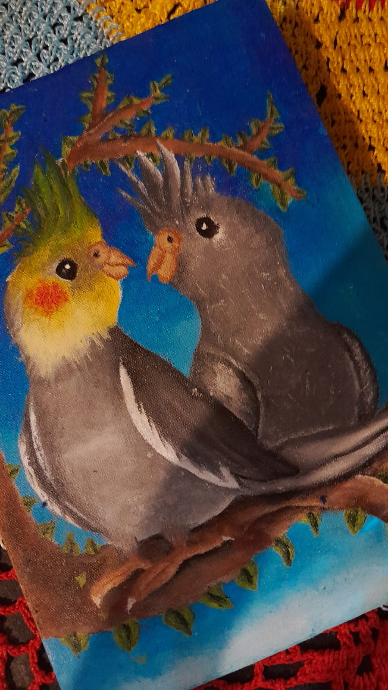

Meus projetos
Desenho de mim criança
Um desenho feito à mão que mostra meu rosto quando eu era pequena. Usei lápis para captar os detalhes e expressar a pureza e a calma daquela época.

Pintura em Tecido
Pintura feita em tecido que mostra uma borboleta vestida segurando uma bebê borboleta. Um trabalho feito à mão, cheio de cuidado e delicadeza.

Quadro das minhas calopsitas
Pintura que mostra minhas calopsitas com detalhes das cores e penas. É uma forma de lembrar o carinho que tenho por elas e o quanto são especiais para mim.